Editorial
Chevy Girl
About the project
Shot in Dallas, Chevy Girl is a personal editorial made to celebrate my friend Emily’s graduation. More than grad photos, it pays homage to lowrider culture and Emily’s heritage, a tribute built around pride, style, and legacy. A pristine 1978 Coupe DeVille, lent to us by Cadillac Mike, gave the scene its nostalgic, confident tone.
Cordell assisted on set to bring the lighting to life. What started as a personal request became one of my favorite explorations of culture and identity through image-making.
- Photography, lighting & editing
- Peter Sanjur
- Model
- Emily
- Lighting assistant
- Cordell
- 1978 Coupe DeVille
- Cadillac Mike
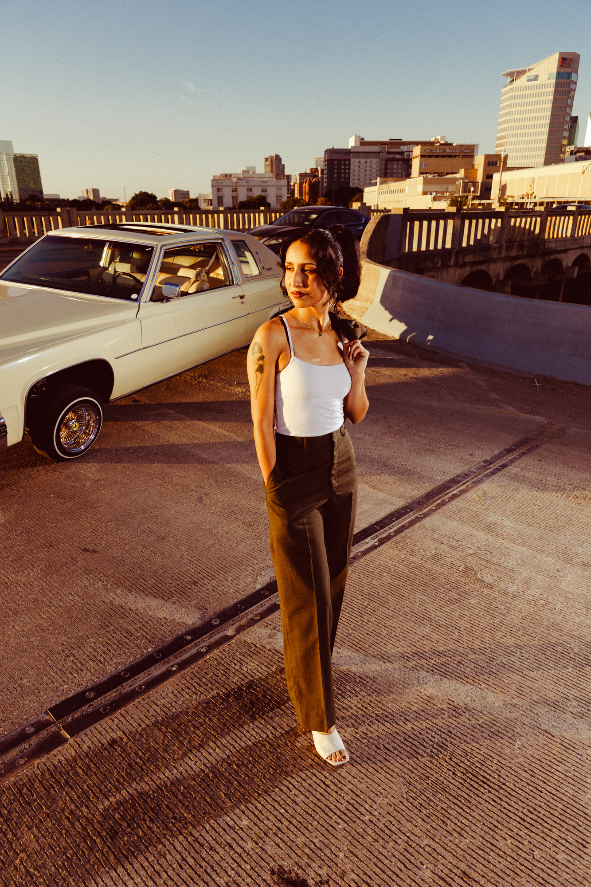
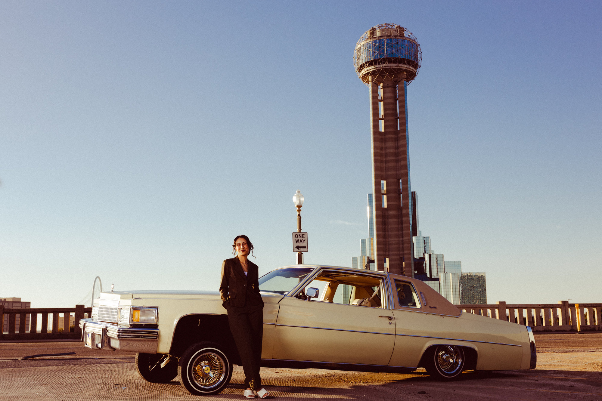
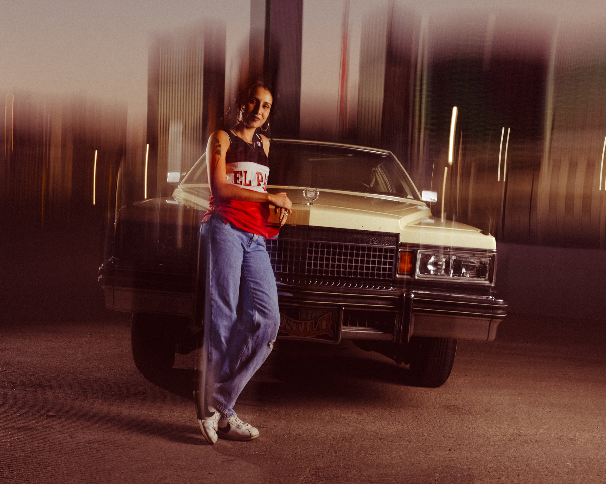
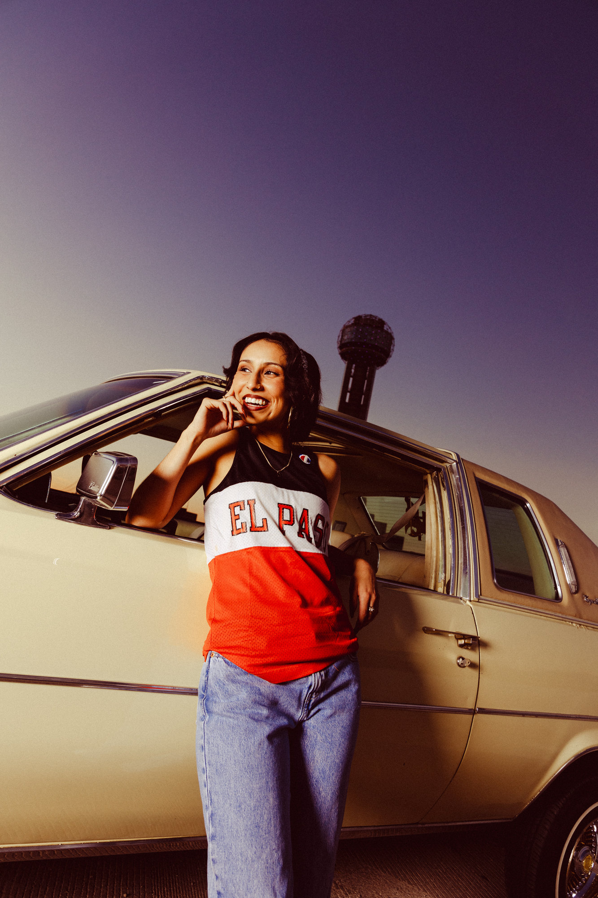
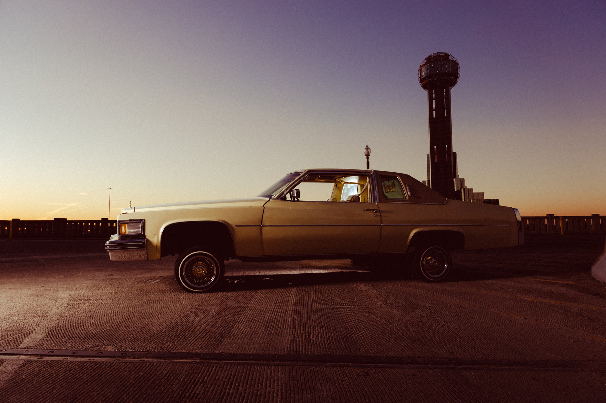
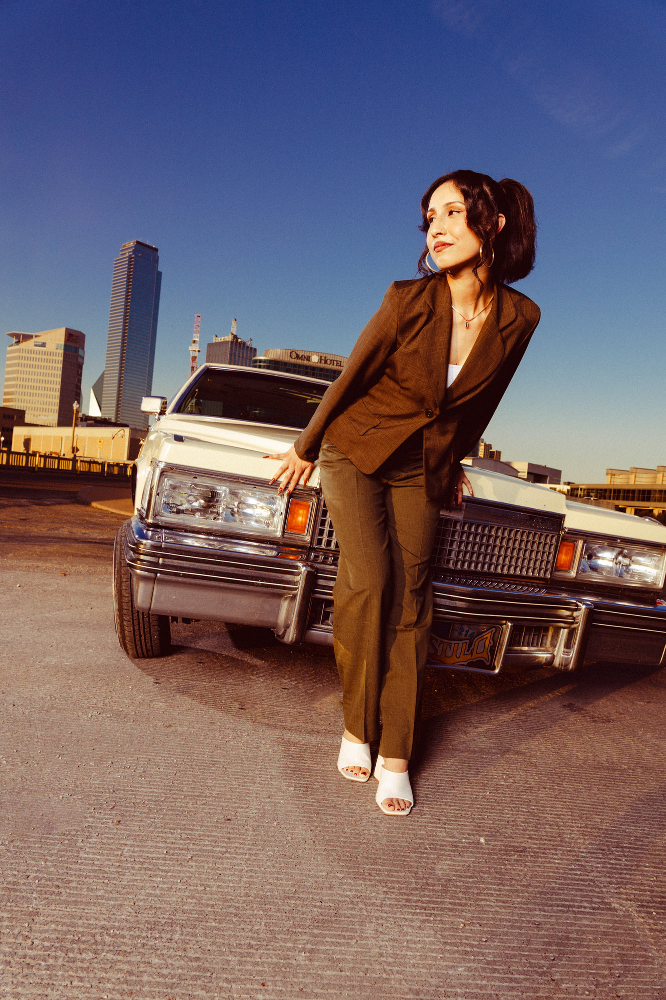
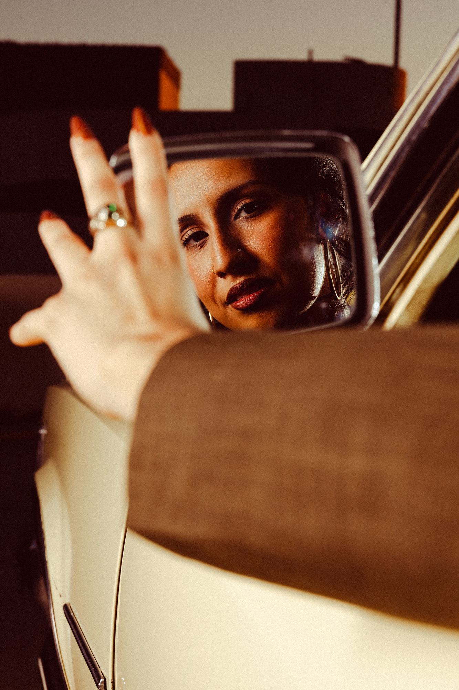
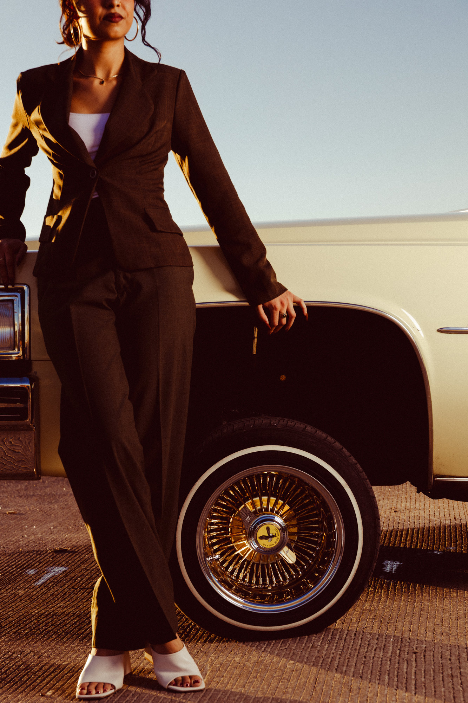
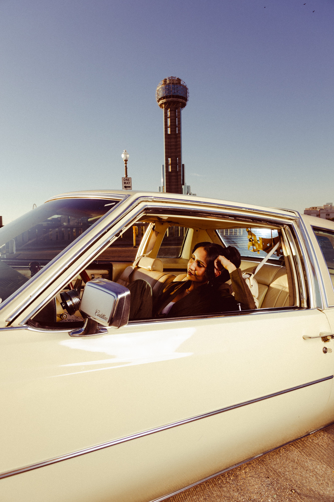
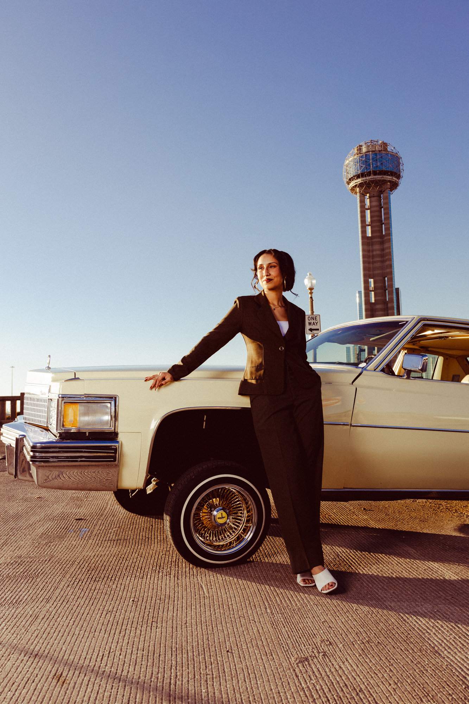
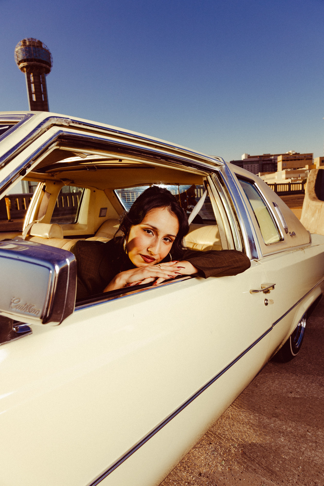
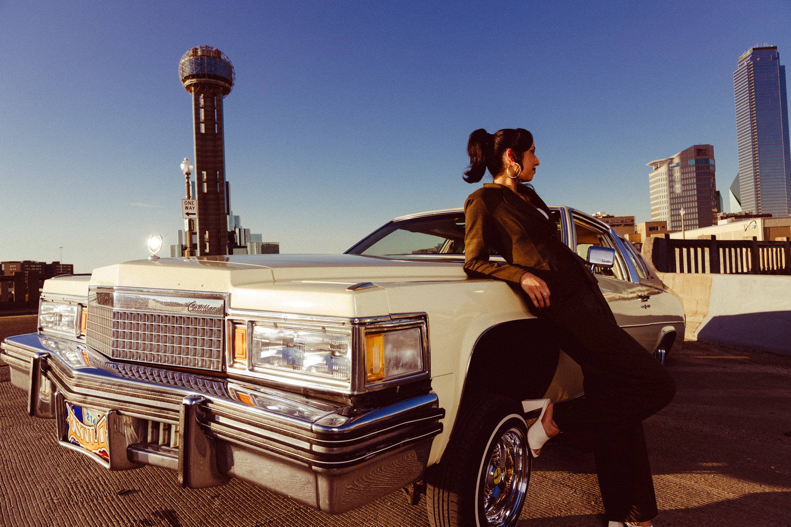